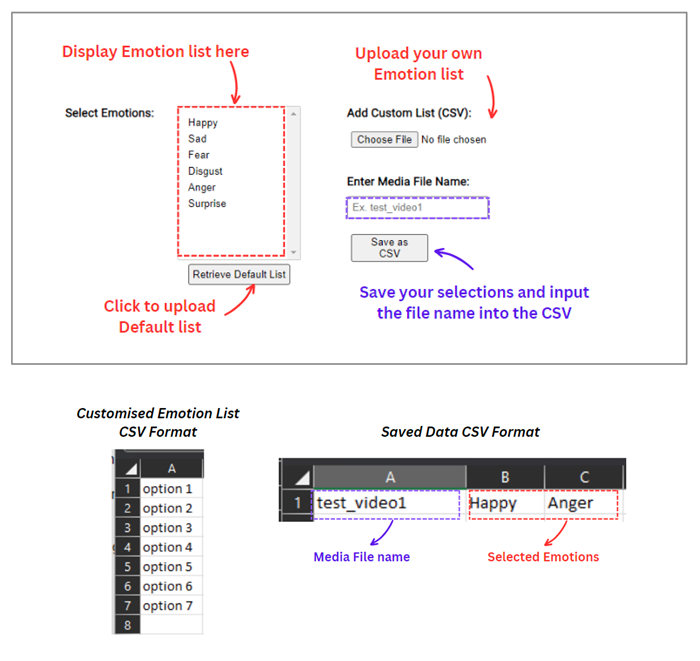

<!DOCTYPE html>
<html>
    <head>
        <title>About discrete emotion model</title>
    </head>
    <script src="https://kit.fontawesome.com/a076d05399.js" crossorigin="anonymous"></script>
    <link href="aboutStyle.css" rel="stylesheet" type="text/css" />
    </html>
    <body>
    <div class="about_container">
        <h3>Instructions for annotating Emotion in Speech</h3>
        <hr>
        <h4><i>Using Discrete/Categorical Emotion Model</i></h4>
        <ol>
            <li>Play a video/ audio file and carefully observe the content, paying attention to the emotions expressed by the speaker or characters.</li>
            <li>Based on the emotions conveyed in the video/audio, choose the most suitable emotion label from the predefined list of emotions, which includes options such as happy, sad, fear, disgust, anger, and surprise. <br> You may also create your own customised emotion list, following the format shown below in the CSV file. </li>
            <li>Upon selecting the emotions that best describe the overall emotion conveyed in the video/audio, please enter the name of the media file to be saved in the designated field.</li>
            <li>Click the "Save as CSV" button to store your annotation. Your input will contribute to the collection and analysis of emotional data in the video/audio.</li>
        </ol>
        <p><strong>Note</strong>: Please strive for accuracy in your annotations, aiming to capture any and all emotions conveyed in the video/audio. If you encounter uncertainty or if multiple emotions are present, feel free to select all the emotions that you perceive, including the primary or most prominent ones.</p>
    
        
    </div>
</body>
